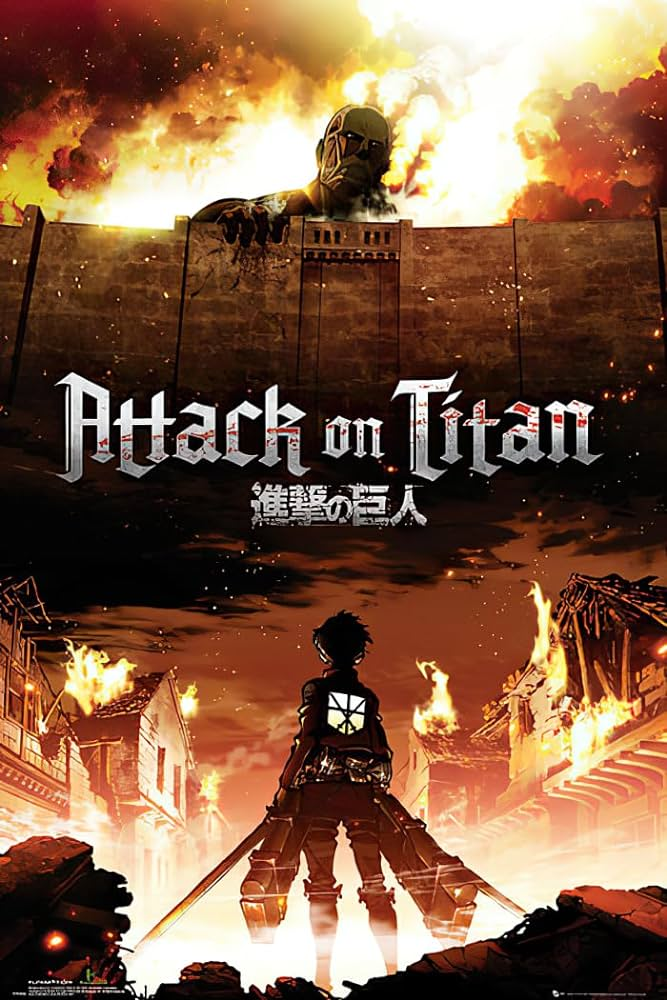
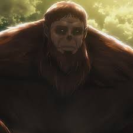

Attack On Titan Trivia Quiz
What's your level of knowledge for AoT?

- What did Eren give as a present to Mikasa after he helped rescue her?
- A. Necklace
- B. Gloves
- C. Scarf
- D. Notebook
- Who said the following:
"I Don't Like The Terms 'Good Person' Or 'Bad Person' Because It Is Impossible To Be Entirely Good To Everyone Or Entirely Bad To Everyone."
- A. Krista
- B. Armin
- C. Levi
- D. Annie
- What is the name of this titan?

- A. Hairy Titan
- B. Beast Titan
- C. Strong Titan
- D. Ape Titan
- Which trio does not exist?
- A. Ymir, Reiner, Bertholdt
- B. Sasha, Connie, Jean
- C. Levi, Erwin, Hanji
- D. Armin, Mikasa, Eren
Done!
Click here for Answer Key